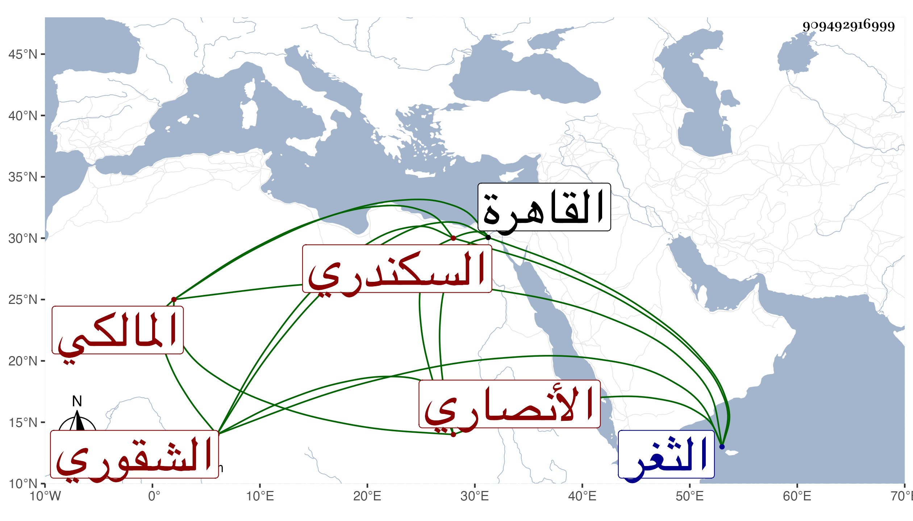

0902Sakhawi.DawLamic.ITO20230111-ara1.EIS1600.909492916999
Biography ID: 909492916999
231
عبد الله بن محمد بن محمد بن سليمان بن عطاء بن جميل بن فضل بن خير ابن النعمان الكمال بن النجم بن الزين الأنصاري الشقوري السكندري المالكي ويعرف بابن خير بمعجمة مفتوحة ثم تحتانية ساكنة . ولد سنة تسع وثلاثين وسبعمائة وأحضر في الرابعة على الشرف بن المصفي والجلال علي بن الفرات سداسيات الرازي وعلى أولهما مشيخة الرازي وعليه وعلى الشهاب أحمد بن محمد بن مسعود التجيبي الأول من أمالي أبي المظفر بن السمعاني وعلى غيرهم ثم أسمع في آخر الخامسة وذلك في شوال سنة ثلاث وأربعين على والده والتقي بن عرام الدعاء للمحاملي وبعد ذلك على محمد بن عثمان بن عمر بن كامل البلبيسي الأول من الخلعيات وعلى محمد ابن جابر الوادياشي بعض الشفا ، وحدث ببلده قديما قرأ عليه شيخنا في أول سنة ثمان وتسعين سداسيات الرازي ووصفه بأقضى القضاة ابن القاضي وكذا لقيه ابن موسى المراكشي بالثغر في سنة خمس عشرة ووصفه بالقاضي العالم المسند الرحلة وسمع معه عليه من شيوخنا الموفق الأبي الموطأ والتقصي وغيرهما وروى لنا عنه خلق كالزين رضوان وأبي حامد بن الضيا والبدر بن التنسي ، ثم قدم القاهرة في سنة تسع عشرة وحدث في جامع الأزهر بالشفا وغيره وممن سمع منه حينئذ صاحبنا البهاء المشهدي وفي الأحياء الآن من سمع منه وعمر حتى مات سنة بضع وعشرين وهو في عقود المقريزي رحمه الله وإيانا .
